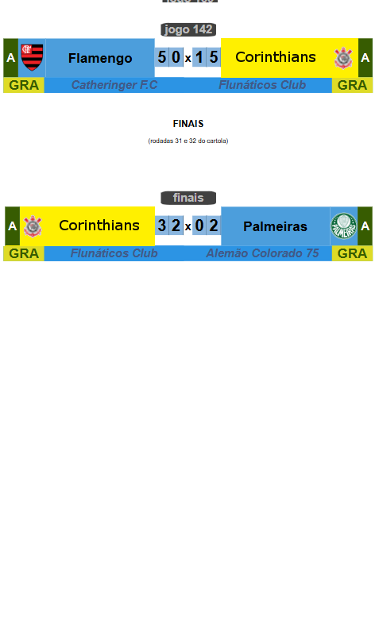
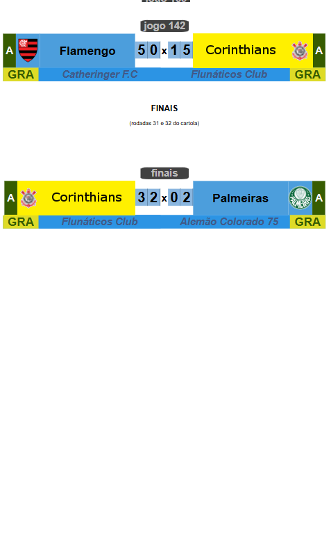

Campeonato de Cartola
A vitória no cartola é o sucesso do seu time!

Redação Cartola - 08/11/2024 - 20h43min
Na quarta e maior edição de todos os tempos, nenhum outro treinador (dos que conseguiram chegar até às oitavas-de-finais) mereceu tanto este título como o "Flunáticos Club". Como único cartoleiro a conduzir o seu clube desde a primeira fase da competição, o cartoleiro da cidade de Rio Claro, interior do sul fluminense, mais conhecido como "latino", superou nada menos que nove clubes até a conquista do título:
Campeão Paulista de 2024, clube de Itaquera chega a seu segundo título em sua história. Mais do que isso, a conquista da Copa do Brasil credenciou o Corinthians como primeiro classsifcado à disputa da Copa Libertadores Interligas 2025 e, como consequência, ingresso na Copa do Brasil 2025 a partir das oitavas-de-finais.
Não fosse apenas o líder do ranking geral de forma isolada, treinador "Flunáticos Club" chegou ao tricampeonato da Copa do Brasil, neste torneio que conta com apenas quatro edições. Ingresso na liga desde 2019, o único ano em que o cartoleiro não levantou taça foi na temporada de 2023. De lá pra cá são nove títulos em 6 temporadas que juntos entregam 1070 pontos, muito à frente do segundo colocado ("Guarda Popular"), com menos da metade da pontuação do Flunáticos, de longe o nosso maior cartoleiro de todos os tempos.
Cartoleiro "Alemão Colorado 75", treinador do clube vice-campeão, apesar da perda do título, faturou 200 reais pelo vice-campeonato. Já o Flunáticos recebeu a importância de 420 reais.
Ao Flunáticos, nossas congratulações por mais este merecido título! Abaixo, o registro de todos os jogos da quarta edição da Copa do Brasil de Clubes
de Cartola:

 
